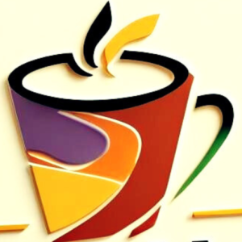
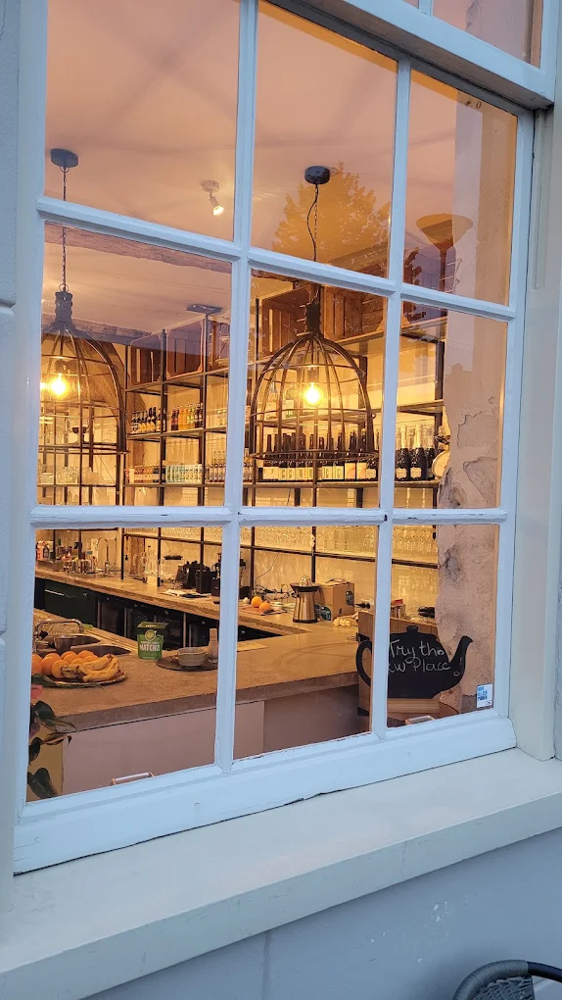

vanaf 09:00
High-Tea Brunch
30,00 p.p.
- Onbeperkt thee
- Sap, per glas of karaf
- Fles gefilterd water
- Hartige broodjes
- Scones of croissant
- Zoete snacks

Mock and Munch ReserverenAlcoholvrij lunchcafé aan het Sint Agathaplein, Delft
Mocktails, biologische koffie en thee en smaakvolle, grotendeels plant-based gerechten. In een ontspannen sfeer met een knipoog naar vroeger.
Di t/m za vanaf 10:00, zo vanaf 12:00

Mocktails, smoothies en bijzondere dranken. Fruitig, fris en zonder alcohol.
Verse snacks en lunchgerechten, grotendeels plant-based en biologisch waar het kan.
Je hoeft hier niks te verklaren, je bent gewoon welkom.
Mock and Munch is een eigentijds ‘dry’ lunchcafé op het Sint Agathaplein in Delft, een van de mooiste pleinen van de stad. Wij geloven dat genieten niet altijd alcohol vereist. Bij ons vind je een gevarieerd aanbod van drankjes, snacks en smaakvolle gerechten.
Alcoholvrij hoeft niet saai te zijn: denk aan fruitige mocktails, verse gemberthee, matcha lattes en Kolonne 0-wijnen. Onze kaart is grotendeels plant-based, koffie en thee zijn biologisch.
Onze missie: een gastvrije, inclusieve ontmoetingsplek waar mensen van alle leeftijden en voorkeuren samen kunnen genieten. Met aandacht voor sociaal contact, welzijn en bewust genieten.
Food 2.0: lunch, snacks om te delen en zoetigheid. * = vegetarisch, alle andere gerechten zijn plant-based (vegan).

Onze koffie en thee zijn biologisch.
Daarnaast: mocktails, smoothies en alcoholvrije Kolonne 0-wijnen. Vraag ernaar aan de bar.
Wij serveren geen kraanwater.
De keuken gaat een uur voor sluitingstijd dicht. Allergie? Wij informeren je graag. Sporen van allergenen kunnen we niet uitsluiten.

Drie arrangementen om samen lang te tafelen, natuurlijk helemaal alcoholvrij. Vanaf 3 personen en vooraf te reserveren.
Arrangement reserverenvanaf 09:00
30,00 p.p.
vanaf 14:00
32,50 p.p.
vanaf 16:00
35,00 p.p.
Toeslag mogelijk bij koffiedrankjes en afwijkende verzoeken.
Lunchen met vrienden, een verjaardag, een zakelijke afspraak of gewoon even tot rust komen. Met groepen tot 50 personen ben je welkom. Ook voor live events, jazzoptredens en proeverijen kun je bij ons terecht: vraag naar de mogelijkheden.
Mail over je groep of event
Sint Agathaplein 4
2611 HR Delft
Reserveren doe je per e-mail. Laat weten met hoeveel personen je komt, op welke dag en hoe laat.
| Maandag | gesloten |
|---|---|
| Dinsdag | 10:00 – 16:00 |
| Woensdag | 10:00 – 16:00 |
| Donderdag | 10:00 – 16:00 |
| Vrijdag | 10:00 – 16:30 |
| Zaterdag | 10:00 – 17:00 |
| Zondag | 12:00 – 16:00 |
De keuken sluit een uur voor sluitingstijd.